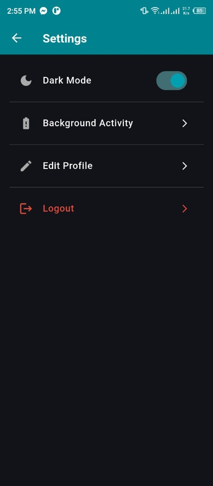
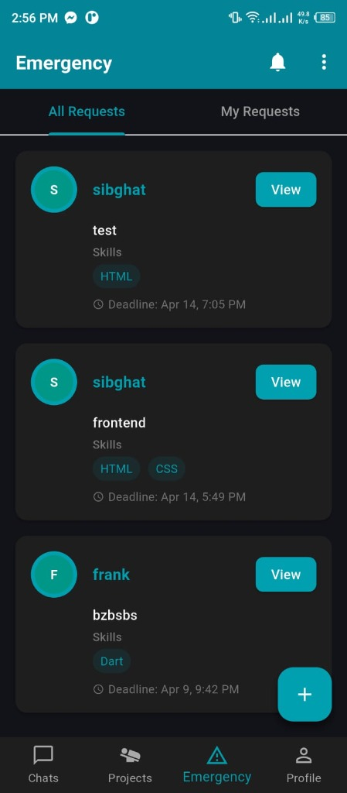
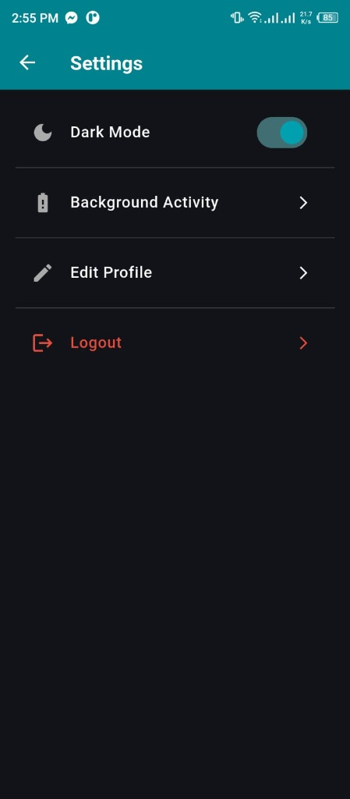
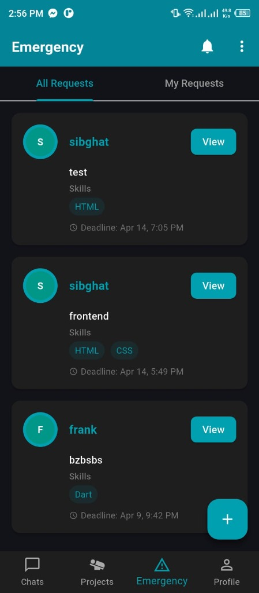
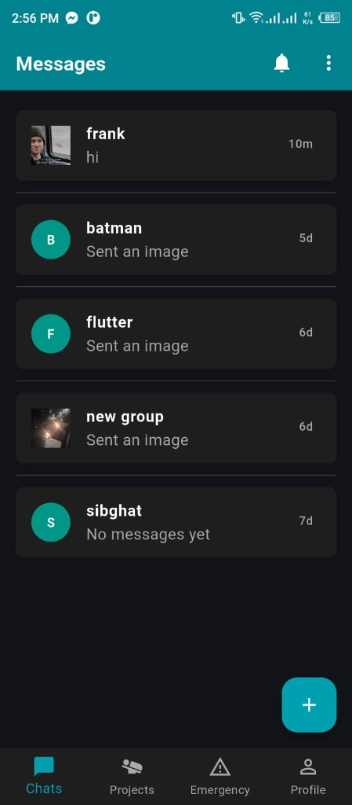
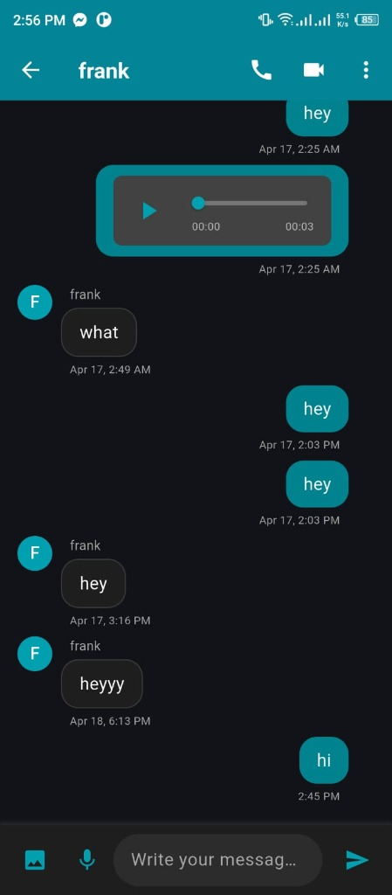
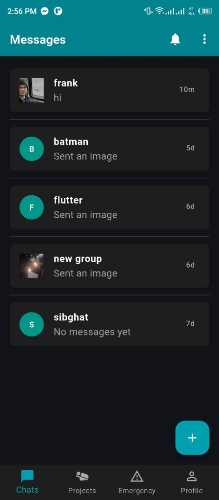
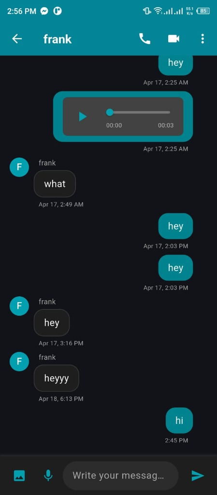

Curio Campus
Peer-to-Peer Collaboration & Emergency Support Platform
Curio Campus is a sophisticated ecosystem designed to foster seamless collaboration and instant peer-to-peer assistance. By bridging the gap between individuals seeking help and those with relevant expertise, the platform transforms communities into self-sustaining support networks.
The Challenge
In academic and professional environments, productivity often stalls due to specialized hurdles. Standard communication tools lack the urgency or the filtering needed to find specific skill sets instantly. Students and professionals frequently find themselves "stuck"—unable to move forward simply because they don't know who around them has the expertise to help. The challenge was to create a platform that could match needs with skills in real-time, especially for time-critical tasks.
The Solution
Curio Campus solves this by implementing a skill-driven matching engine. Instead of broadly asking for help, users broadcast "Skill-Based Help Requests" that are pushed directly to peers with the corresponding tags.
The platform integrates specialized communication verticals—supporting everything from simple chat to full-scale video calls and group collaboration. By focusing on Emergency Support, the app ensures that users get moving again quickly, whether they are troubleshooting code, finalizing a project, or requiring urgent professional advice.
Core Capabilities
- Emergency Help Engine: Priority posting system that notifies matched peers within seconds.
- Rich Communication: End-to-end messaging, voice calling, and HD video calling built for collaborative work.
- Dynamic Skill Discovery: Advanced tagging system that allows users to find the right person for the right task instantly.
- Integrated Management: Track subtasks, assign responsibilities, and manage team deadlines within the app.
Technical Implementation
The application was built using Flutter to deliver a high-performance cross-platform experience. On the backend, Firebase provides the real-time backbone, with FCM (Firebase Cloud Messaging) ensuring delivery of instant alerts for emergency requests and incoming collab calls.
The Impact
Curio Campus reduces the "time-to-expertise"—the duration it takes for someone to get help when facing a specialized problem. By gamifying skill discovery and facilitating instant connections, it not only gets work done faster but also builds stronger social capital within professional and student cohorts. It's more than just an app; it's a community-driven accelerator for productivity.
Interface Preview
 



 


